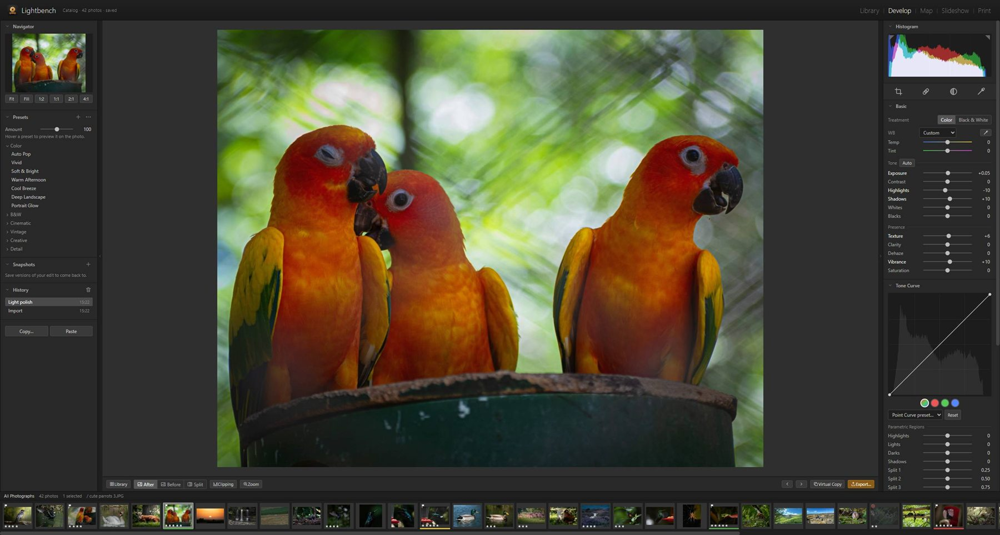
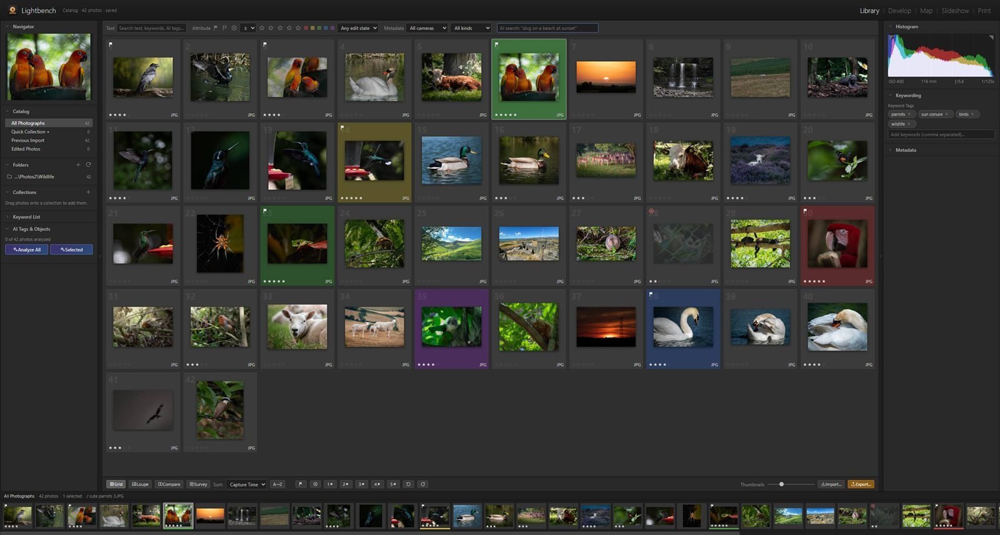
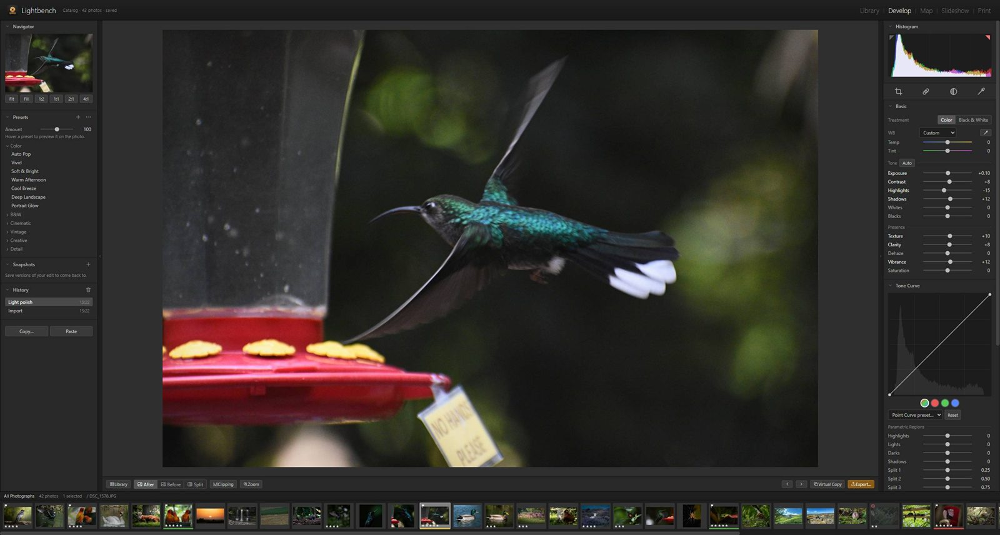
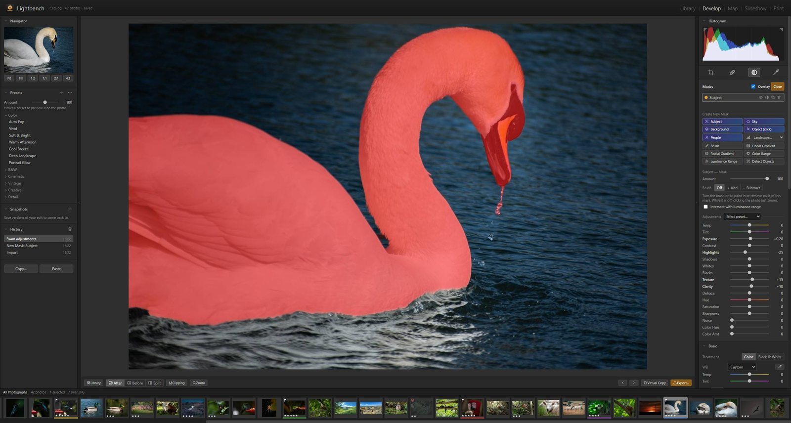
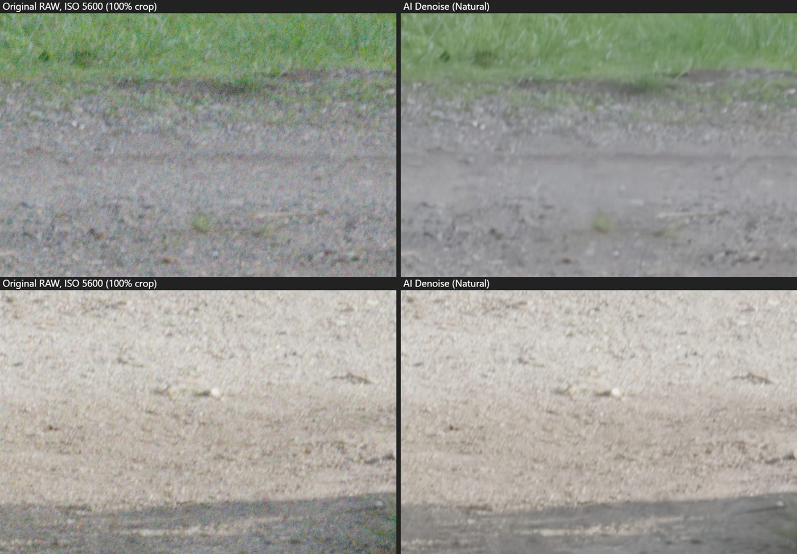

Edit your photos.
Own your tools.
Lightbench is a fast, free photo library and RAW editor for Windows and Mac — with AI masking, AI Denoise and natural-language search that run entirely on your own computer.

A complete photo workflow
Import, organize, cull, edit and export — non-destructively, with every adjustment running live on your graphics card.
True RAW processing
16-bit RAW decoding for Nikon, Canon, Sony, Fujifilm, Olympus, Panasonic, DNG and more — with real highlight and shadow recovery.
Pro-grade adjustments
Exposure, tone curve, HSL, color grading wheels, clarity, dehaze, texture, sharpening, noise reduction, lens & perspective, grain and vignettes.
Masks & local edits
Brush, linear and radial gradients, color and luminance ranges — plus AI masks that select the subject, sky, objects or people in one click.
Organize & cull fast
Star ratings, pick flags, color labels, keywords, collections and smart collections, compare and survey views, and keyboard-driven culling.
Presets, history, snapshots
Built-in looks with hover preview, your own presets, unlimited undo history, snapshots, virtual copies and copy/paste/sync settings.
Export, print, map, slideshow
Export presets, resizing, output sharpening and watermarks; contact sheets and PDFs; a map of your GPS photos; full-screen slideshows.
Find the keepers in minutes
Lightbench reads your photos where they already are — no copying, no lock-in. Rate, flag and label with single keys, then filter to exactly what you need.
- Grid, loupe, compare and survey views
- Smart collections that update themselves
- Search by words, keywords, camera — or describe the photo


Every adjustment, instantly
A GPU editing engine keeps every slider live, even on 24-megapixel RAW files. Edits are non-destructive — your originals are never touched.
- Before / after and split views
- Crop with auto-straighten, healing and clone
- Full-resolution export in JPEG, PNG or WebP
The tedious parts, done for you
Lightbench's AI runs locally on your graphics card. Nothing is uploaded, and there's no subscription.

One-click masks
Select the subject, background, sky, people or landscape regions instantly — or click any object to select it. Then darken a sky, brighten a face, or warm the foreground.
AI Denoise
Rescue high-ISO and low-light shots. AI Denoise removes noise at full resolution while keeping real detail — and you can dial the amount up or down any time.

Natural-language search
Type “cows in a field” or “sunset over water” and Lightbench finds the photos — no tagging required.
Auto-tagging
Scenes, subjects and objects are recognized automatically and can be turned into keywords in a click.
Find similar
Pick a photo and instantly see every similar shot in your library — great for picking the best of a burst.
Your photos never leave your computer
No account. No cloud. No telemetry. Lightbench edits and analyzes everything locally — the only downloads are the AI models, once, the first time you use them.
- Works with your existing folders — nothing is moved or copied
- Originals are never modified; edits live in Lightbench's catalog
- AI runs on your own CPU / GPU
- Free for personal and commercial photo work
Get Lightbench — free
Version 1.0.0. Install it in a minute; your photos stay where they are.
Windows
Windows 10 or 11, 64-bit.
Windows may show a warning the first time — here's what to click
Download for WindowsMac — Apple silicon
M1, M2, M3, M4 and newer. macOS 12 or later.
Needs one extra click the first time (how) — help us remove it ☕
Download for Apple siliconMac — Intel
Intel-based Macs. macOS 12 or later.
Needs one extra click the first time (how) — help us remove it ☕
Download for Intel Mac✓ Scanned clean by 70+ antivirus engines on VirusTotal
Recommended: 8 GB RAM, a graphics card with WebGPU support (most from 2016 onwards). On first launch Lightbench offers to download its AI models (about 600 MB, once) so every AI feature works offline.
By downloading you agree to the license agreement. All versions & release notes
Made by a small independent studio
Mac users currently need one extra click the first time they open Lightbench, because Apple charges $99 a year to sign apps. If Lightbench is useful to you, a coffee helps cover that — so Mac users can just double-click and go — and helps fund new features and fixes.
Questions
Is Lightbench really free?
Yes. Lightbench is free to download and use, including for paid photography work. See the license agreement.
Windows says “Windows protected your PC”
That message appears for new apps that aren't yet widely downloaded. Click More info, then Run anyway. Lightbench installs only for your user account and doesn't need administrator rights.
macOS says Lightbench “can't be opened” or “is damaged”
- Open the downloaded .dmg and drag Lightbench to Applications.
- Open Lightbench. When macOS says it can't be opened, click Done.
- Open System Settings → Privacy & Security, scroll down and click Open Anyway next to Lightbench, then confirm. (On macOS 14 and older you can instead right-click Lightbench → Open.)
- If macOS says Lightbench is damaged, open Terminal and run
xattr -cr /Applications/Lightbench.app && codesign --force --deep -s - /Applications/Lightbench.app
then open it again.
You only need to do this once. It happens because Lightbench isn't signed with a paid Apple developer certificate yet — the app itself is safe and runs entirely on your Mac.
Which Mac download do I need?
Apple menu → About This Mac. If it says Chip: Apple M…, choose Apple silicon; if it says Processor: Intel, choose Intel.
Which cameras and file types are supported?
JPEG, PNG, WebP, TIFF, and RAW files from almost every camera: Nikon NEF, Canon CR2/CR3, Sony ARW, Fujifilm RAF, Olympus ORF, Panasonic RW2, Pentax PEF, DNG and more.
Does Lightbench change my original photos?
Never. Lightbench reads photos where they are and stores edits in its own catalog (in your Pictures folder). Exporting creates new files.
Do the AI features need the internet?
Only once. On first launch Lightbench offers to download all its AI models (about 600 MB) in the background — you can keep working meanwhile. After that every AI feature runs offline, entirely on your computer. You can also manage them any time in Lightbench menu → AI Models.